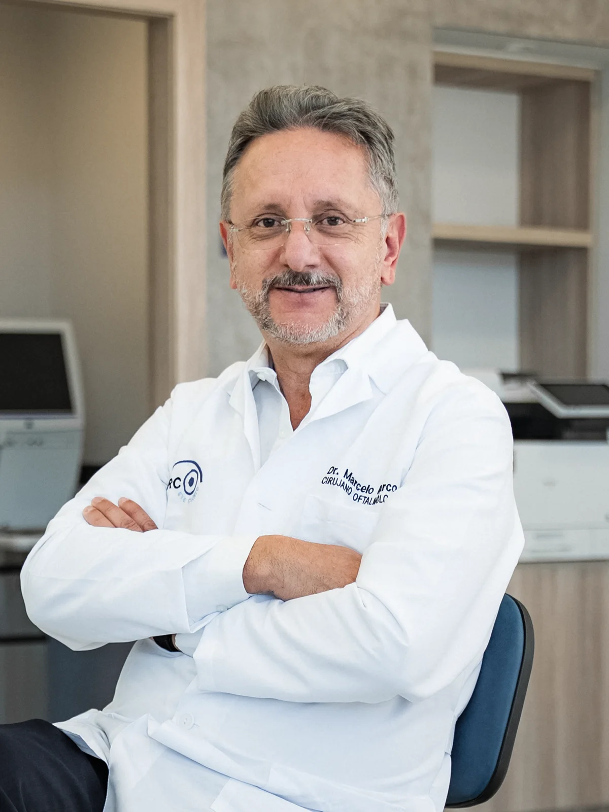
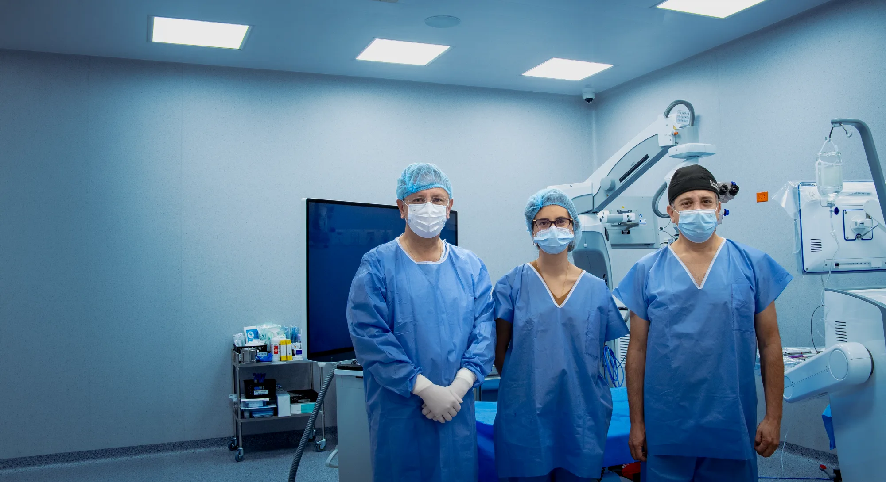
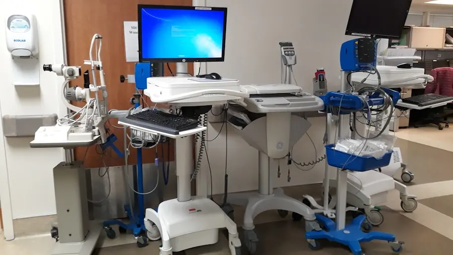
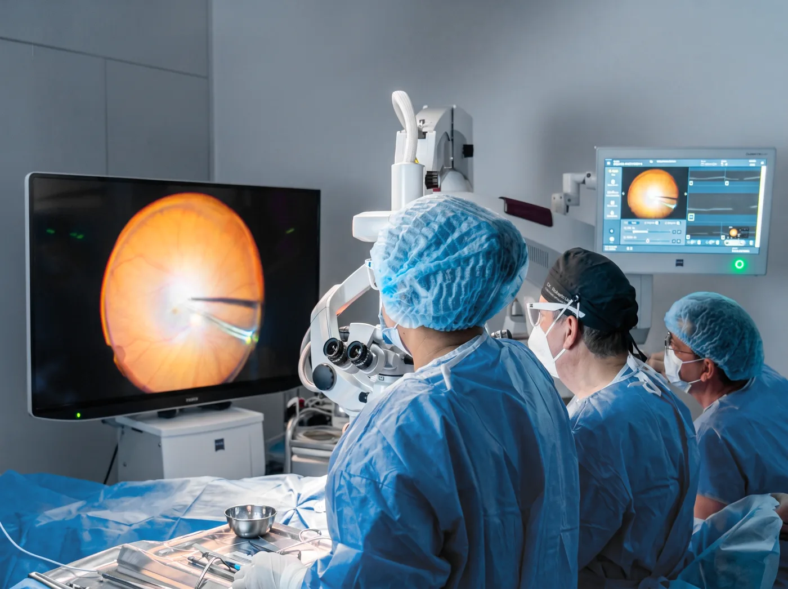
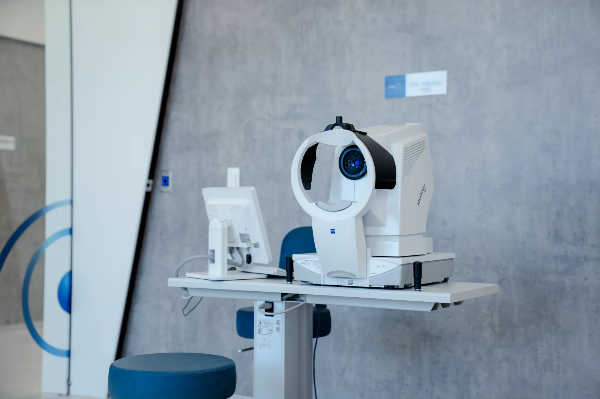
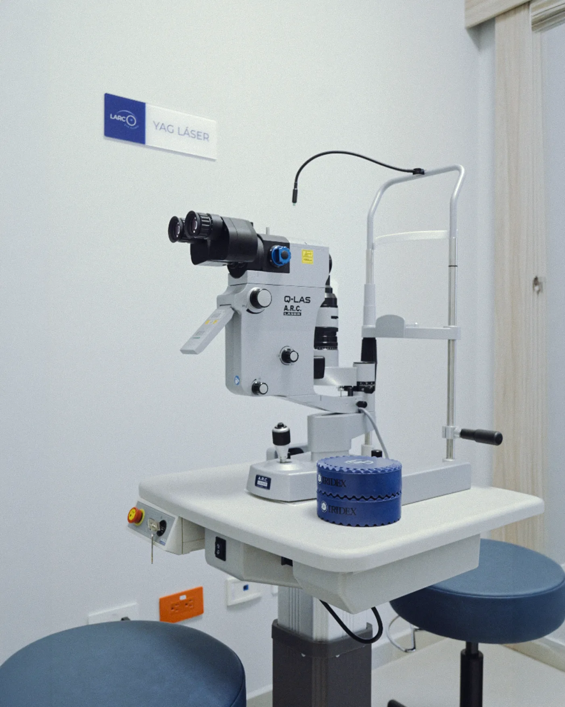
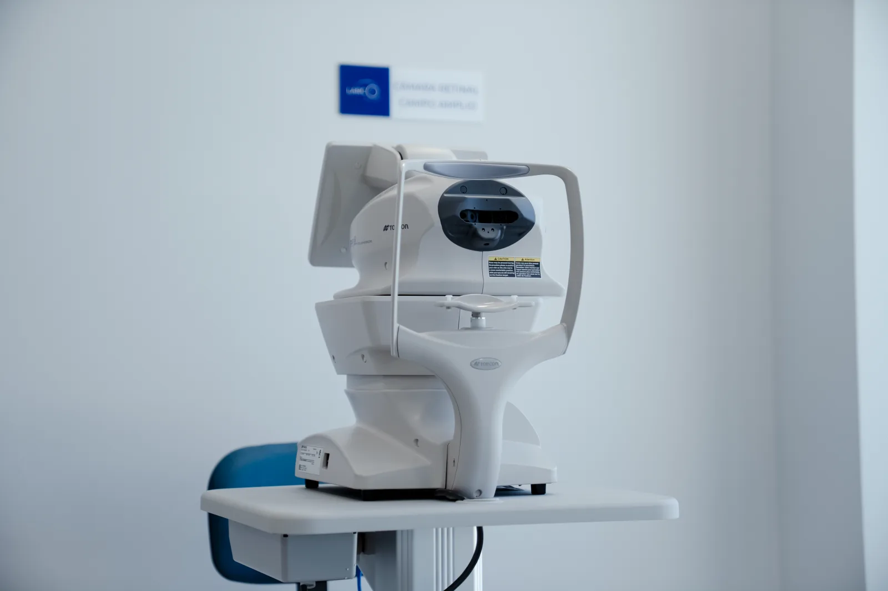
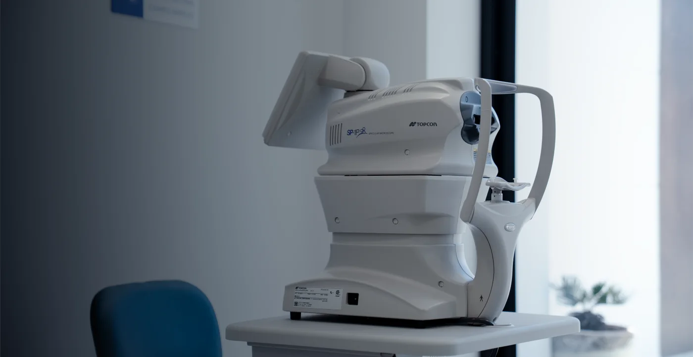
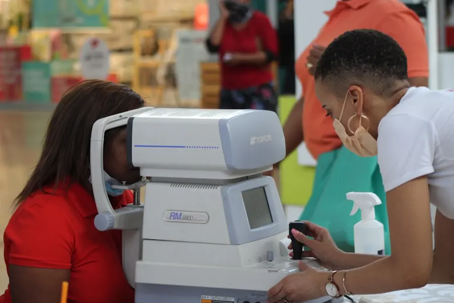

Dr. Marcelo Larco
Cirujano oftalmólogo · Córnea, catarata y cirugía refractiva


Desde el primer consultorio en Ibarra, en 1950, hasta la clínica de hoy en Quito.

Su combinación de rigor profesional y trato humano hizo que su nombre trascendiera: recibía pacientes de todo el norte del país e incluso del sur de Colombia. Ese fue el inicio de una vocación que marcaría a la familia por generaciones.
Inspirados en su ejemplo, sus hijos siguieron el mismo camino: el Dr. Marcelo Larco, especialista en córnea, catarata y cirugía refractiva, y el Dr. Roberto Larco, especialista en retina y vítreo, continúan hoy ese legado con Larco Eye Clinic, uniendo la herencia médica de la familia con la tecnología más avanzada de la oftalmología moderna.
Porque si algo hemos aprendido en estas tres generaciones es que la medicina evoluciona, pero el compromiso no cambia: devolver y cuidar la visión de cada paciente con la misma dedicación con la que todo empezó.
Brindar atención oftalmológica integral, humana y de excelencia, respaldada por 70 años de experiencia, con tecnología de vanguardia y un profundo compromiso con la salud visual de nuestros pacientes, contribuyendo a mejorar su calidad de vida con ética, calidez y profesionalismo.
Ser una clínica oftalmológica referente en Ecuador y Latinoamérica, reconocida por la excelencia médica, la innovación continua, el trato humano y el legado de una familia dedicada por generaciones al cuidado de la visión.
Cirujano oftalmólogo · Córnea, catarata y cirugía refractiva

Cirujano oftalmólogo · Retina y vítreo · 30 años de experiencia

Cirujana oftalmóloga
Equipos de última generación y espacios diseñados para diagnósticos precisos y tratamientos seguros, con el respaldo de marcas líderes como ZEISS.


Donde se realizan los estudios de diagnóstico previos a cada consulta y cirugía.

Tecnología de diagnóstico y tratamiento con el respaldo de marcas líderes en oftalmología. Pasa el cursor o toca una ficha para ver el detalle.


Última tecnología en Ecuador; calcula con exactitud el lente intraocular antes de una cirugía de catarata.


Estudio de alta resolución de la retina y el nervio óptico.

Registro fotográfico del fondo del ojo para detectar y seguir enfermedades retinianas.

Análisis del campo visual, clave en el diagnóstico y seguimiento del glaucoma.



Tratamiento de precisión para enfermedades de la retina.

Procedimientos láser para catarata secundaria y glaucoma.
Evaluación oftalmológica integral con nuestros especialistas. Dirección, teléfono y horarios por confirmar.